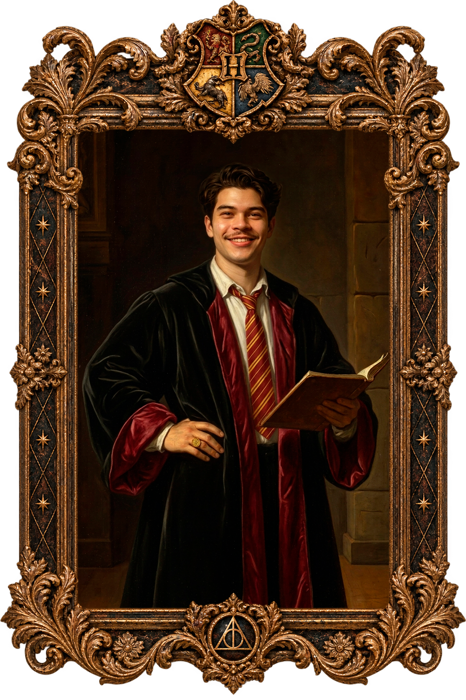
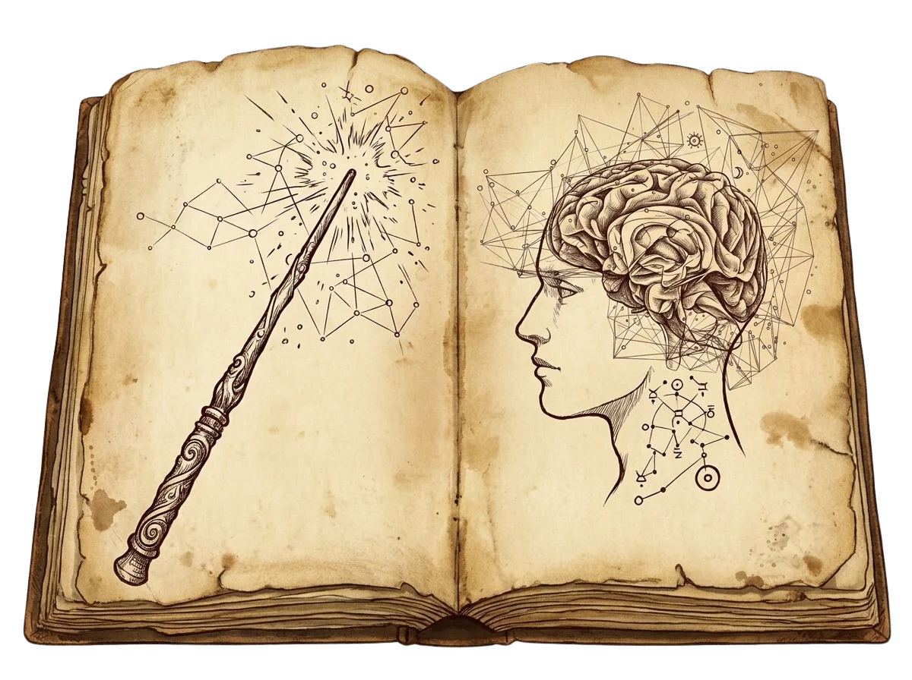
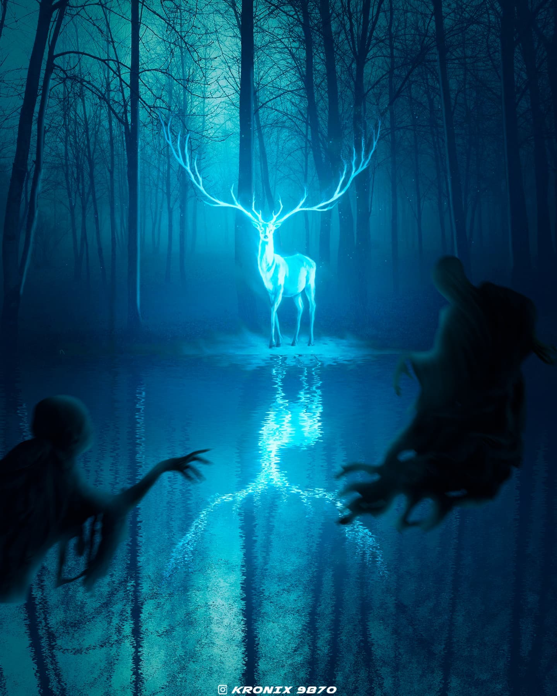
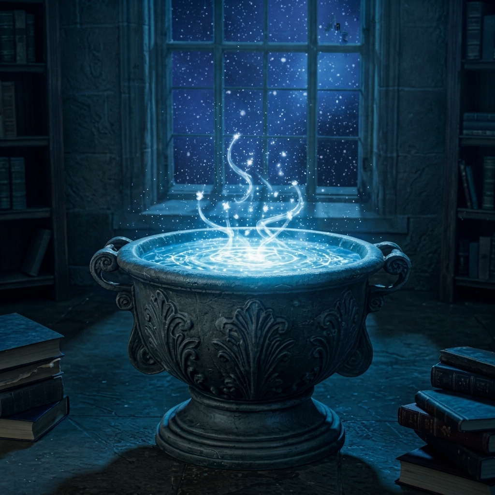
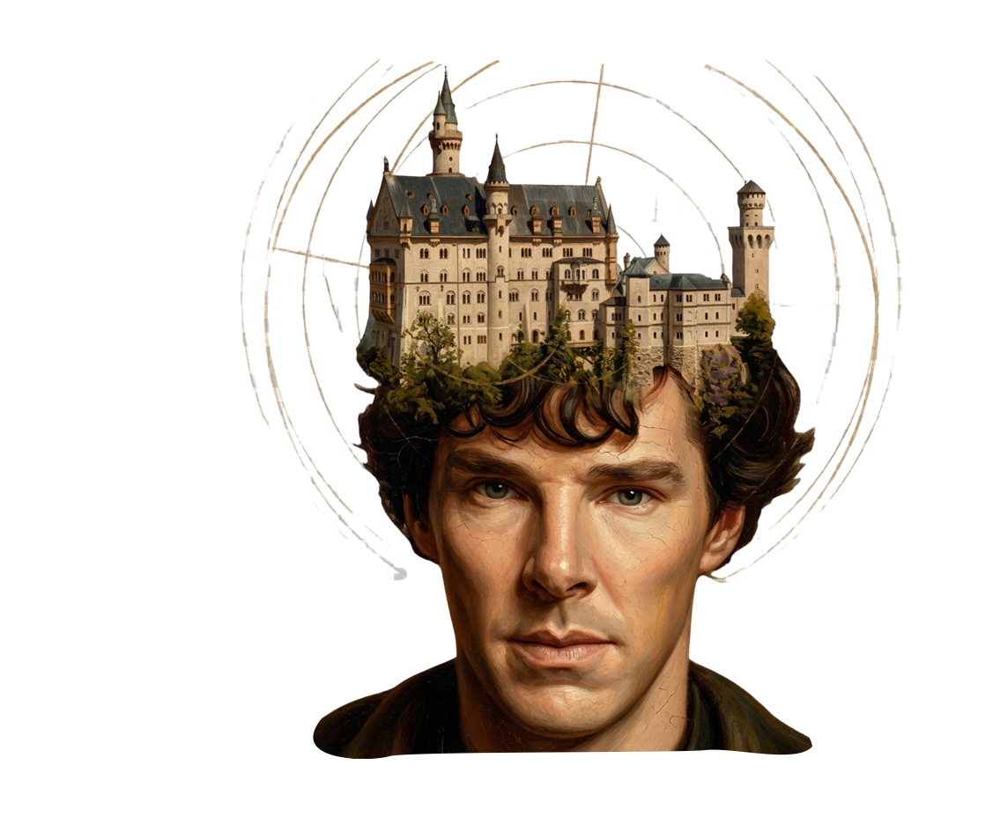

Ao acordar, escolher o que comer,
lembrar de um compromisso, estudar ou praticar algum esporte, o cérebro está
trabalhando.
Conhecer como ele funciona é um primeiro passo para cuidar
melhor dele, lidar com adversidades, promover o sentimento de bem-estar e
alcançar nossos objetivos de vida.
Universo Mágico
Um mundo onde tudo pode ser criado.
Harry Potter é uma saga de livros e filmes de ficção que acompanha Harry e seus amigos, jovens bruxos em Hogwarts, uma escola onde se aprende a lançar feitiços, preparar poções e enfrentar criaturas assustadoras. Por trás da magia, a história fala de coragem, amizade, medo, memória e decisões difíceis, temas que também estão dentro de cada um de nós.
Explore o universo mágico

Neurociência
Bilhões de neurônios
Bilhões de neurônios
se conversam e criam
quem você é

Jornada
Minha Jornada
Do garoto que assistia filmes de bruxos na TV ao criador do Neuronium.
Descubra de perto de onde veio toda a imaginação para unir dois assuntos que se conectam.
-
2007
Era uma vez...
-
2008
A imaginação
-
2010
O dispositivo...

A Conexão
Da magia à ciência
Muitos feitiços, poções e elementos mágicos que eu admirava podem ser metáforas curiosas para processos reais da mente.
O Neuronium nasceu com a missão de trazer a conexão da magia aos conceitos da neurociência, para ajudar outras pessoas, que assim como eu, querem descobrir a sua magia interna, explorar o poder do seu cérebro e viver com qualidade.
Feitiços e Artefatos

Explore mais detalhes
A ciência por trás de cada feitiço e artefato
Feitiços repetidos
→ HábitosFeitiços são conjurações mágicas que um bruxo busca na mente e materializa na realidade.
Assim como o bruxo treina o mesmo feitiço até acertar, cada repetição fortalece as conexões entre neurônios, e o comportamento fica mais automático...

Patrono
→ Regulação emocionalPatrono é um símbolo de proteção, ele é expressado através do feitiço Expecto Patronum que materializa um animal encantado usando lembranças felizes para proteger o bruxo das ameaças de magias obscuras...

Penseira
→ HipocampoA penseira é um objeto mágico, semelhante a uma bacia de pedra rústica com água, que ao mergulhar o rosto, busca memórias profundas da mente, que ajudam o bruxo a reviver cenários de eventos da sua vida e ter maior clareza nas suas decisões...
Palácio Mental
Palácio Mental
É uma técnica milenar de memorização, você imagina um lugar que conhece bem e "guarda" cada informação importante em um cômodo.
Você pode construir o seu castelo da memória para não esquecer o que realmente importa, utilizando da sua imaginação durante uma meditação ou com ferramentas de anotações.
Entrar no palácio
Game
Neuronium Game
Vença os duelos do dia a dia contra a ansiedade, a distração e a procrastinação utilizando feitiços de foco, constância e disciplina baseados em estratégias da neurociência.
Aprenda como a neurociência comportamental pode reprogramar o seu cérebro para transformar a sua vida e mudar a lente pela qual você enxerga o mundo.
Jogar
Dashboard
Dashboard
Em breveEm breve: acompanhe sua evolução no Neuronium em um só lugar.